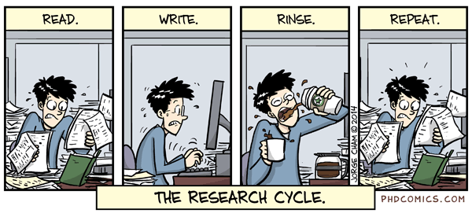

Research
Dissertation
Title: Unified Price Indices for Spatial ComparisonsCo-Chairs: Roderick Little and Matthew Shapiro
Summary: Developed and implemented a method to estimate spatial price indices at low levels of aggregation, such as US counties, using data from retail barcode scanners.
Completion Date: September 2019
Overview
Most people know that the value of a unit of currency varies based on the country in which it is spent, or across time. The same phenomenon holds for different regions of the United States. Economists and statistical bureaus have sophisticated techniques for adjusting nominal values into real terms before making comparisons between different countries or time periods, but comparisons within the United States are often still made on the basis of nominal dollar values. This is especially true for research that makes comparisons at low levels of geographic aggregation, such as counties.
Because the price indices required to adjust nominal figures at such low levels of aggregation are not available, researchers are often forced to ignore regional differences in purchasing power when making these comparisons. For example, studies may use nominal incomes to gauge differences in the purchasing power of consumers between different counties, even in cases where researchers might prefer real incomes for this purpose. These nominal figures do not take into account differences in the prevailing price levels faced by people in the regions being compared, nor do they consider differences in the kinds of products that are available in the areas being compared. As a result, the levels of consumption available to the people being researched may not be accurately represented.
Dissertation Abstract

This thesis proposes a method to measure fine-grained spatial differences in purchasing power. This method exploits the recent availability of computer-generated retail scanner data sets to compensate for the absence of sufficiently detailed pricing data in the national accounts. To correct for regional differences in product availability and quality, it extends the theoretical Unified Price Index (UPI) proposed in Redding and Weinstein (2016) from the temporal to the spatial context. In this formulation, differences in product availability in different places are treated as analogous to differences in product availability at different times due to the "birth" and "death" of products across time.
It provides an example of how to apply this method, by estimating differences in food prices between Michigan counties from information in the Nielsen Retail Scanner Dataset. The estimation of these indices can be divided into three steps. First, spatial UPIs are estimated comparing the cost of living between each pairing of Michigan counties for the 554 different categories of food included in the data. For example, one of these indices might compare the price of bacon in each county, while another might compare prices for fresh fruit, etc. Next, the GEKS method is applied to impose transitivity on each set of comparisons. These product level indices are aggregated into an index reflecting the cost of living for all food using a weighted geometric mean. The weights for each product in this process are the share of total food expenditure that the product accounts for. Finally, superpopulation estimates of the geometric variance of these indices are produced using a cluster bootstrap method. The indices we estimate suggest that the raw prices of food goods are similar between counties in Michigan, with a cross-county standard deviation of about 0.02. When differences in available product varieties are taken into account however, the estimated cost of living in rural areas is consistently higher than the estimated cost of living in more populous counties.